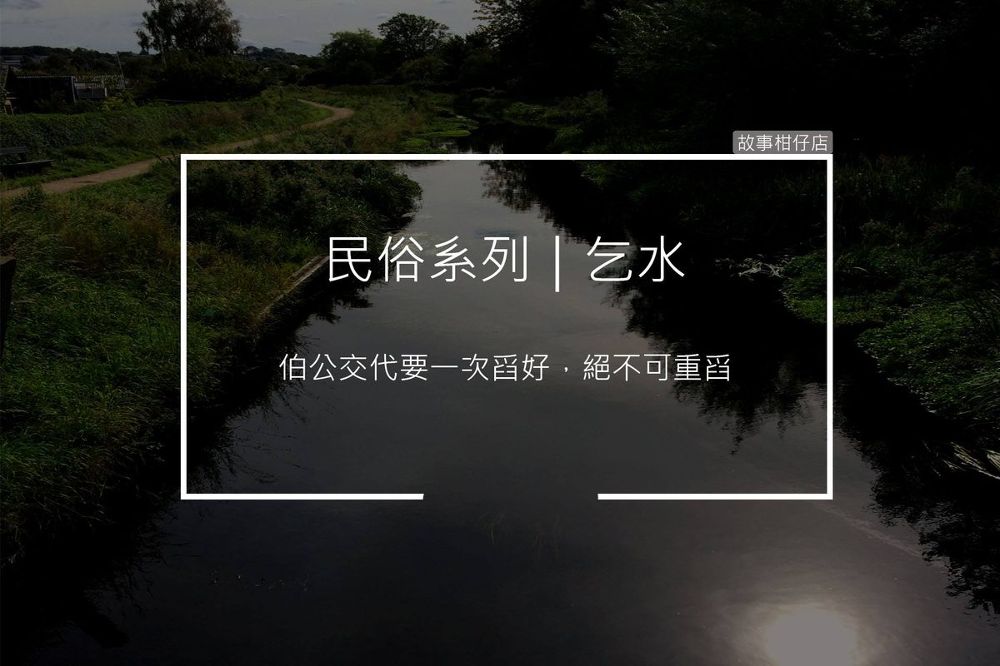

乞水

台灣喪葬禮俗中，接棺後隨即「乞水」（又稱「買水」），子孫全部穿孝服往大圳溝或河川走，為首者帶瓦缽（小水壼）、香、刈金、兩枚硬幣，抵水源處燒香向水神稟告往者去世消息，並期望向水神乞水以便為往者沐浴，用擲幣方式詢問同意與否後，則焚金投幣於水中，然後下跪用瓦缽順流舀水。
乞水忌用死水（井水），必須順流舀水，不可逆流，尤忌重舀，犯者恐有重喪。
〈乞水〉
「哥，伊最近擱有向你借錢嗎？」
身後傳來耀武的聲，耀文回問：「你又給伊多少了？」
耀武不再作聲，耀文拿著瓦缽和刈金，兩兄弟一前一後沿著田埂靜靜走著。
草蚊子盤旋他倆身邊，耀文厭惡舉手揮趕，忽然想起牌桌上的阿母也老是這樣不耐。
就連方才出門前，阿爸安詳躺在家門外的埕，坐在棺材邊的阿母也只是揮揮手，又低下頭去研究大家樂，臉上不見絲毫哀戚。
田埂盡頭傳來淙淙流水聲，「到了。」耀文說。
從層疊巨石間噴出嘩啦啦一條大圳，激起清澈的水花，空氣變得清涼許多，耀武的聲音也變得輕快起來，「哥你記得嗎？以前阿爸都帶我們來這玩水。」
「記得啊，玩完水再去吃甜不辣。」耀文不自覺泛起微笑。
兩兄弟在岸邊焚香燒金，耀文手捧兩枚硬幣念道：「呼請水公、水婆，今日是林公土火老先生往生作神的好日子，要來跟水公、水婆乞水，給林公土火老先生沐浴淨身，洗乎伊無病無痛……若水公水婆允許請賜聖筊。」
末了，耀文擲出一正一反硬幣，他虔誠拜了拜，取起瓦缽準備裝水。
耀武提醒道：「伯公交代要一次舀好，絕不可重舀。」
「為啥？」
「伯公說，若重舀可能會害阿母隨阿爸去。」
「喔。」耀文的手停在半空，突然問：「阿母到底又跟你拿多少？」
耀武沉默幾秒，垂頭低聲答：「二十萬。伊說還不出來會被剁手剁腳。」
沁涼水花濺濕耀文的臂，他想起阿母翹著一隻腿瞇牌的模樣。
不自覺地，耀文捧著瓦缽跪在岸邊舀起清澈溪水，一次，又一次。
翻翻農民曆、挑個好日子，
一起來故事柑仔店
聽聽民俗的故事。